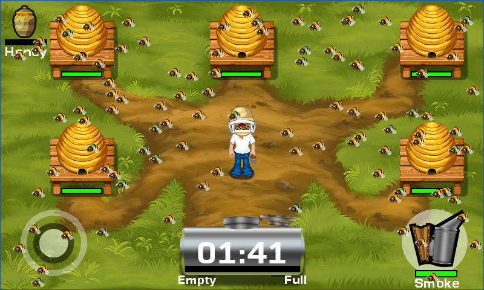

Honeycomb Rush
Ported from the finished Windows Phone/Reach game in Microsoft's XNA 4.0 Honeycomb Rush sample.
Source for this sample on GitHub ↗

Play ▸Opens in a new tab. The first load prepares the browser for the game's background loading threads.
About this sample
Move the beekeeper between the hives, collect honey and return it to the vat before time runs out. Bees swarm the field; smoke helps clear a path. The complete game includes a title menu, instructions, difficulty levels, pause and high scores.
Controls
| Action | Control |
|---|---|
| Start and continue | Tap or click the menu choice, then tap or click the instructions |
| Move the beekeeper | Drag the on-screen control stick at the lower left |
| Use smoke | Press the smoke button at the lower right |
| Pause or resume | Escape; choose Resume or Exit in the pause menu |